Active Contours using Parameteric Curves
This tour explores image segmentation using parametric active contours.
Contents
Installing toolboxes and setting up the path.
You need to download the following files: signal toolbox, general toolbox and graph toolbox.
You need to unzip these toolboxes in your working directory, so that you have toolbox_signal, toolbox_general and toolbox_graph in your directory.
For Scilab user: you must replace the Matlab comment '%' by its Scilab counterpart '//'.
Recommandation: You should create a text file named for instance numericaltour.sce (in Scilab) or numericaltour.m (in Matlab) to write all the Scilab/Matlab command you want to execute. Then, simply run exec('numericaltour.sce'); (in Scilab) or numericaltour; (in Matlab) to run the commands.
Execute this line only if you are using Matlab.
getd = @(p)path(p,path); % scilab users must *not* execute this
Then you can add the toolboxes to the path.
getd('toolbox_signal/'); getd('toolbox_general/'); getd('toolbox_graph/');
Parameteric Curves
In this tours, the active contours are represented using parametric curve \( \ga : [0,1] \rightarrow \RR^2 \).
This curve is discretized using a piewise linear curve with \(p\) segments, and is stored as a complex vector of points in the plane \(\ga \in \CC^p\).
Initial polygon.
gamma0 = [0.78 0.14 0.42 0.18 0.32 0.16 0.75 0.83 0.57 0.68 0.46 0.40 0.72 0.79 0.91 0.90]' + ...
1i* [0.87 0.82 0.75 0.63 0.34 0.17 0.08 0.46 0.50 0.25 0.27 0.57 0.73 0.57 0.75 0.79]';
Number of points of the discrete curve.
p = 256;
Shortcut to re-sample a curve according to arc length.
curvabs = @(gamma)[0;cumsum( 1e-5 + abs(gamma(1:end-1)-gamma(2:end)) )];
resample1 = @(gamma,d)interp1(d/d(end),gamma,(0:p-1)'/p, 'linear');
resample = @(gamma)resample1( [gamma;gamma(1)], curvabs( [gamma;gamma(1)] ) );
Initial curve \( \ga_1(t) \).
gamma1 = resample(gamma0);
Display the initial curve.
clf; h = plot(gamma1([1:end 1]), 'k'); set(h, 'LineWidth', 2); axis('tight'); axis('off');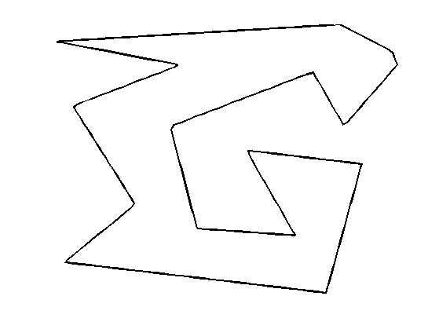
Shortcut for forward and backward finite differences.
BwdDiff = @(c)c - c([end 1:end-1]); FwdDiff = @(c)c([2:end 1]) - c; dotp = @(c1,c2)real(c1.*conj(c2));
The tangent to the curve is computed as \[ t_\ga(s) = \frac{\ga'(t)}{\norm{\ga'(t)}} \] and the normal is \( n_\ga(t) = t_\ga(t)^\bot. \)
Shortcut to compute the tangent and the normal to a curve.
normalize = @(v)v./max(abs(v),eps); tangent = @(gamma)normalize( FwdDiff(gamma) ); normal = @(gamma)-1i*tangent(gamma);
Move the curve in the normal direction, by computing \( \ga_1(t) \pm \delta n_{\ga_1}(t) \).
delta = .03; gamma2 = gamma1 + delta * normal(gamma1); gamma3 = gamma1 - delta * normal(gamma1);
Display the curves.
clf; hold on; h = plot(gamma1([1:end 1]), 'k'); set(h, 'LineWidth', 2); h = plot(gamma2([1:end 1]), 'r--'); set(h, 'LineWidth', 2); h = plot(gamma3([1:end 1]), 'b--'); set(h, 'LineWidth', 2); axis('tight'); axis('off');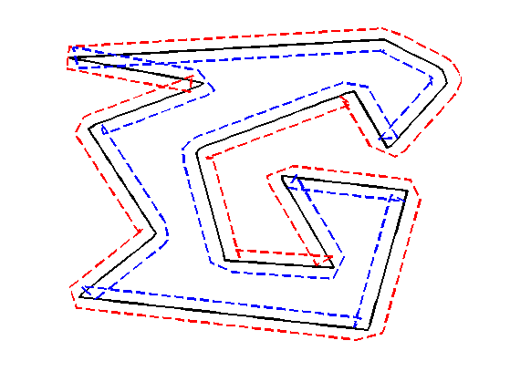
Evolution by Mean Curvature
A curve evolution is a series of curves \( s \mapsto \ga_s \) indexed by an evolution parameter \(s \geq 0\). The intial curve \(\ga_0\) for \(s=0\) is evolved, usually by minizing some energy \(E(\ga)\) in a gradient descent \[ \frac{\partial \ga_s}{\partial s} = \nabla E(\ga_s). \]
Note that the gradient of an energy is defined with respect to the curve-dependent inner product \[ \dotp{a}{b} = \int_0^1 \dotp{a(t)}{b(t)} \norm{\ga'(t)} d t. \] The set of curves can thus be thought as being a Riemannian surface.
The simplest evolution is the mean curvature evolution. It corresponds to minimization of the curve length \[ E(\ga) = \int_0^1 \norm{\ga'(t)} d t \]
The gradient of the length is \[ \nabla E(\ga)(t) = -\kappa_\ga(t) n_\ga(t) \] where \( \kappa_\ga \) is the curvature, defined as \[ \kappa_\ga(t) = \frac{1}{\norm{\ga'(t)}} \dotp{ t_\ga'(t) }{ n_\ga(t) } . \]
Shortcut for normal times curvature \( \kappa_\ga(t) n_\ga(t) \).
normalC = @(gamma)BwdDiff(tangent(gamma)) ./ abs( FwdDiff(gamma) );
Time step for the evolution. It should be very small because we use an explicit time stepping and the curve has strong curvature.
dt = 0.001 / 100;
Number of iterations.
Tmax = 3 / 100; niter = round(Tmax/dt);
Initialize the curve for \(s=0\).
gamma = gamma1;
Evolution of the curve.
gamma = gamma + dt * normalC(gamma);
To stabilize the evolution, it is important to re-sample the curve so that it is unit-speed parametrized. You do not need to do it every time step though (to speed up).
gamma = resample(gamma);
Exercice 1: (check the solution) Perform the curve evolution. You need to resample it a few times.
exo1;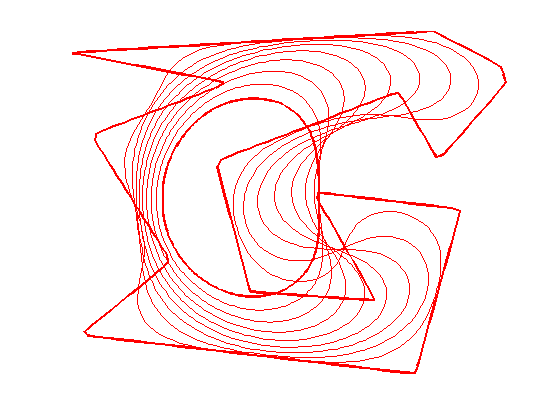
Geodesic Active Contours
Geodesic active contours minimize a weighted length \[ E(\ga) = \int_0^1 W(\ga(t)) \norm{\ga'(t)} d t, \] where \(W(x)>0\) is the geodesic metric, that should be small in areas where the image should be segmented.
Create a synthetic weight \(W(x)\).
n = 200; nbumps = 40; theta = rand(nbumps,1)*2*pi; r = .6*n/2; a = [.62*n .6*n]; x = round( a(1) + r*cos(theta) ); y = round( a(2) + r*sin(theta) ); W = zeros(n); W( x + (y-1)*n ) = 1; W = perform_blurring(W,10); W = rescale( -min(W,.05), .3,1);
Display the metric.
clf; imageplot(W);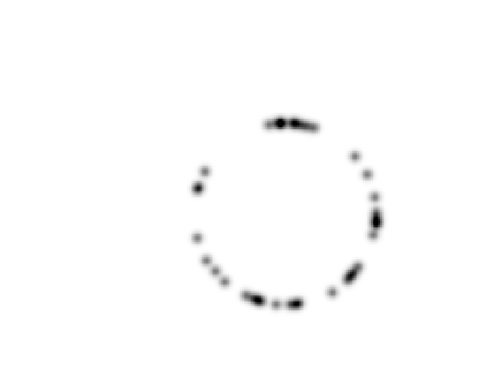
Pre-compute the gradient \(\nabla W(x)\) of the metric.
options.order = 2; G = grad(W, options); G = G(:,:,1) + 1i*G(:,:,2);
Shortcut to evaluate the gradient and the potential along a curve.
EvalG = @(gamma)interp2(1:n,1:n, G, imag(gamma), real(gamma)); EvalW = @(gamma)interp2(1:n,1:n, W, imag(gamma), real(gamma));
Create a circular curve \(\ga_0\).
r = .98*n/2;
p = 128; % number of points on the curve
theta = linspace(0,2*pi,p+1)'; theta(end) = [];
gamma0 = n/2*(1+1i) + r*(cos(theta) + 1i*sin(theta));
Initialize the curve at time \(t=0\) with a circle.
gamma = gamma0;
For this experiment, the time step should be larger, because the curve is in \([1,n] \times [1,n]\).
dt = 1;
Number of iterations.
Tmax = 5000; niter = round(Tmax/dt);
Display the curve on the back ground;
lw = 2; clf; hold on; imageplot(W); h = plot(imag(gamma([1:end 1])),real(gamma([1:end 1])), 'r'); set(h, 'LineWidth', lw); axis('ij');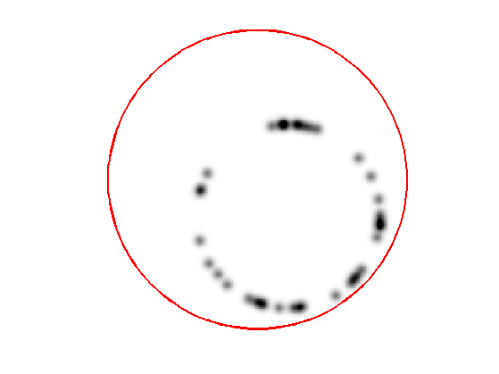
The gradient of the energy is \[ \nabla E(\ga) = -W(\ga(t)) \kappa_\ga(t) n_\ga(t) + \dotp{\nabla W(\ga(t))}{ n_\ga(t) } n_\ga(t). \]
Evolution of the curve according to this gradient.
N = normal(gamma); g = - EvalW(gamma).*normalC(gamma) + dotp(EvalG(gamma), N) .* N; gamma = gamma - dt*g;
To avoid the curve from being poorly sampled, it is important to re-sample it evenly.
gamma = resample( gamma );
Exercice 2: (check the solution) Perform the curve evolution.
exo2;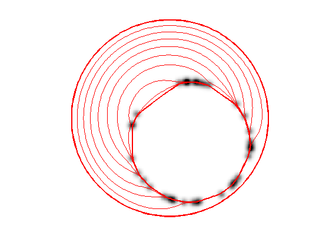
Medical Image Segmentation
One can use a gradient-based metric to perform edge detection in medical images.
Load an image \(f\).
n = 256;
f = rescale( sum(load_image('cortex', n), 3 ) );
Display.
clf; imageplot(f);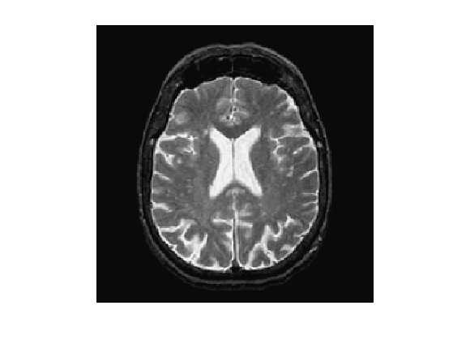
An edge detector metric can be defined as a decreasing function of the gradient magnitude. \[ W(x) = \psi( d \star h_a(x) ) \qwhereq d(x) = \norm{\nabla f(x)}. \] where \(h_a\) is a blurring kernel of width \(a>0\).
Compute the magnitude of the gradient.
options.order = 2; G = grad(f,options); d = sqrt(sum(G.^2,3));
Blur it by \(h_a\).
a = 3; d = perform_blurring(d,a);
Compute a decreasing function of the gradient to define \(W\).
d = min(d,.4); W = rescale(-d,.8,1);
Display it.
clf; imageplot(W);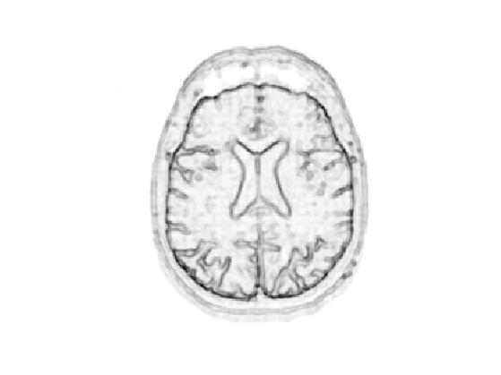
Number of points.
p = 128;
Exercice 3: (check the solution) Create an initial circle \(\gamma_0\) of \(p\) points.
exo3;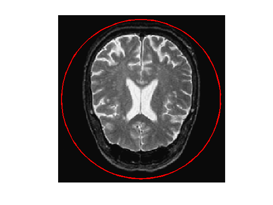
Step size.
dt = 2;
Number of iterations.
Tmax = 9000; niter = round(Tmax/dt);
Exercice 4: (check the solution) Perform the curve evolution.
exo4;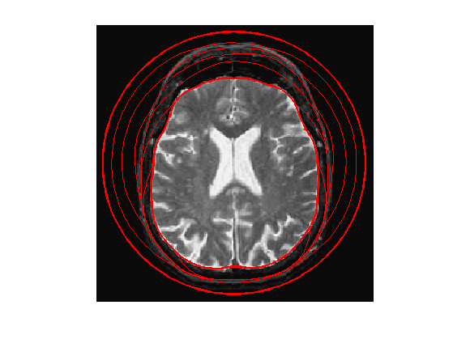
Evolution of a Non-closed Curve
It is possible to perform the evolution of a non-closed curve by adding boundary constraint \[ \ga(0)=x_0 \qandq \ga(1)=x_1. \]
In this case, the algorithm find a local minimizer of the geodesic distance between the two points.
Note that a much more efficient way to solve this problem is to use the Fast Marching algorithm to find the global minimizer of the geodesic length.
Load an image \(f\).
n = 256;
f = rescale( sum(load_image('cortex', n), 3 ) );
f = f(46:105,61:120);
n = size(f,1);
Display.
clf; imageplot(f);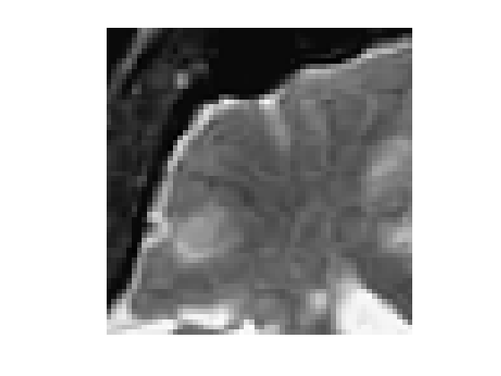
Exercice 5: (check the solution) Compute an edge attracting criterion \(W(x)>0\), that is small in area of strong gradient.
exo5;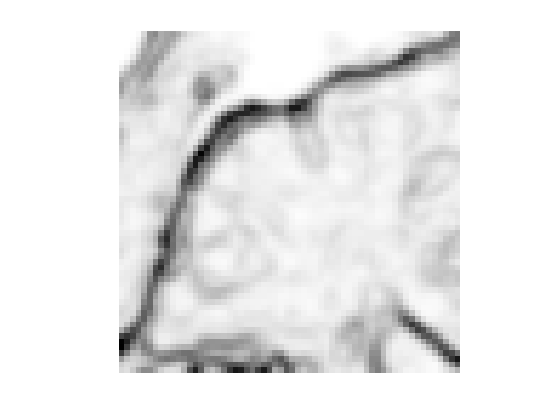
Start and end points \(x_0\) and \(x_1\).
x0 = 4 + 55i; x1 = 53 + 4i;
Initial curve \(\ga_0\).
p = 128; t = linspace(0,1,p)'; gamma0 = t*x1 + (1-t)*x0;
Initialize the evolution.
gamma = gamma0;
Display.
clf; hold on; imageplot(W); h = plot(imag(gamma([1:end])),real(gamma([1:end])), 'r'); set(h, 'LineWidth', 2); h = plot(imag(gamma([1 end])),real(gamma([1 end])), 'b.'); set(h, 'MarkerSize', 30); axis('ij');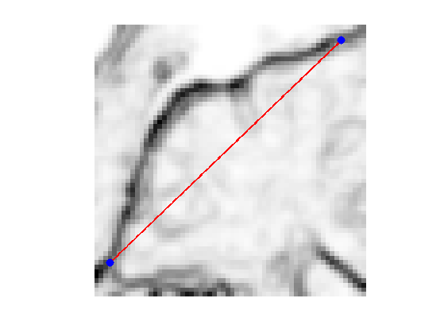
Re-sampling for non-periodic curves.
curvabs = @(gamma)[0;cumsum( 1e-5 + abs(gamma(1:end-1)-gamma(2:end)) )];
resample1 = @(gamma,d)interp1(d/d(end),gamma,(0:p-1)'/(p-1), 'linear');
resample = @(gamma)resample1( gamma, curvabs(gamma) );
Time step.
dt = 1/10;
Number of iterations.
Tmax = 2000*4/7; niter = round(Tmax/dt);
Exercice 6: (check the solution) Perform the curve evolution. Be careful to impose the boundary conditions at each step.
exo6;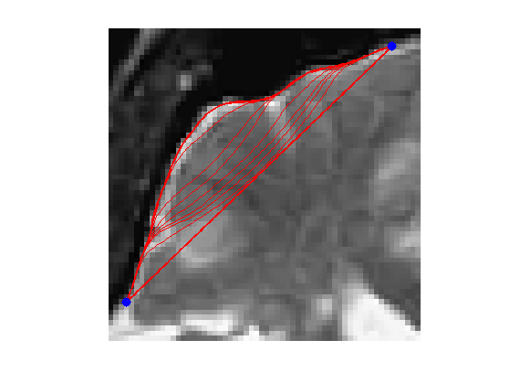